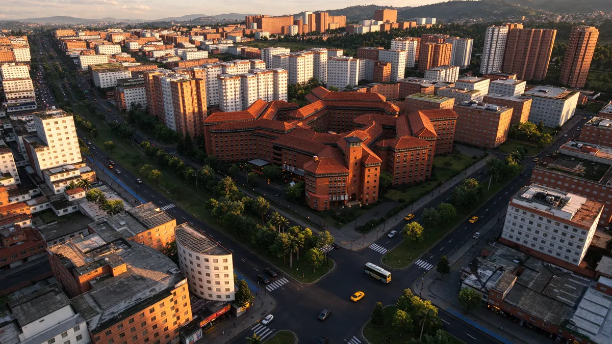
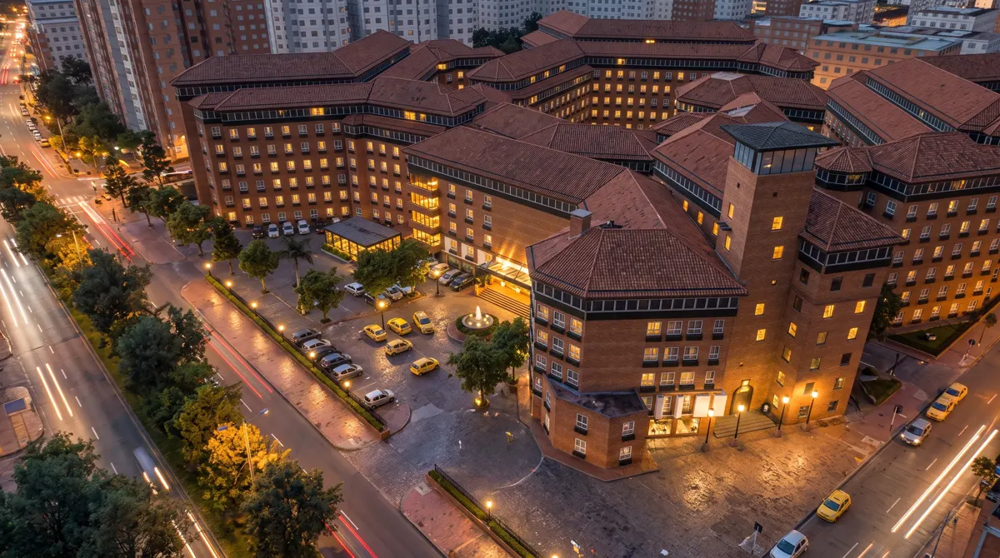
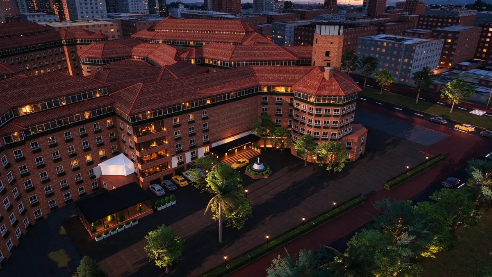
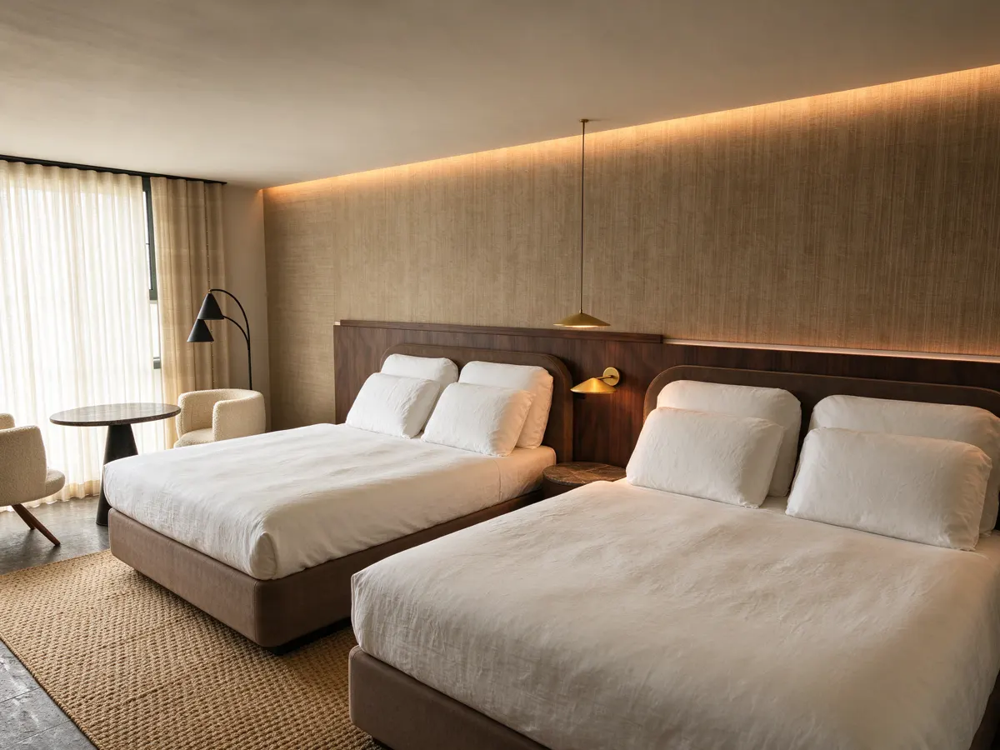
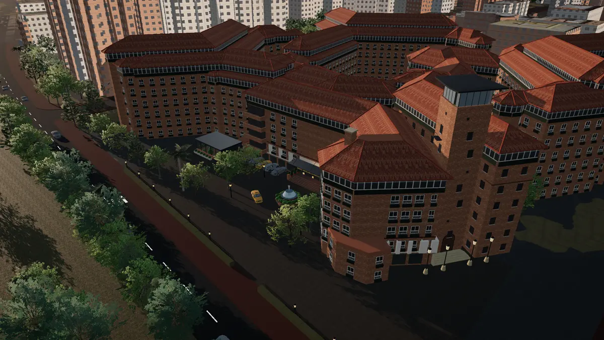

Bogotá D.C. · Usaquén · 2026
Hotel Estelar
La Fontana
Remodelación integral del Piso 2: doce habitaciones rediseñadas dentro de un edificio de ladrillo y teja de barro que es referente del norte de la ciudad.
El proyecto
Un piso completo, repensado habitación por habitación
La intervención actualiza el segundo nivel del hotel sin tocar su carácter: se conserva la envolvente de ladrillo y la ventanería original, y se rediseñan por dentro las alas Recta Norte, Diagonal y el sector de Suites del fondo.
Cada habitación parte del modelo BIM del edificio: pisos vinílicos con veta hacia la ventana, paneles en nogal, papel de colgadura tejido, mesones en mármol y mobiliario a medida.
- Habitaciones
- 12
- Tipologías
- 7
- Alas intervenidas
- 3
- Altitud
- 2 552 msnm
Contexto urbano
Una manzana completa entre avenidas arboladas

Piso 2 · Planta de habitaciones
Elige una habitación
Desliza la planta para recorrerla · toca un número
Interiores
Materiales cálidos, luz indirecta




Proceso
Del modelo a la imagen
Cada visualización sale de una vista del modelo del edificio. Arrastra el control para comparar la vista base con la imagen final.

Modelo VisualizaciónImágenes de visualización generadas a partir del modelo 3D del proyecto. Son ilustrativas: acabados, vegetación, entorno y detalles pueden variar frente al modelo y a la obra.
Ubicación
Usaquén, frente a Unicentro
- Dirección
- Av. Calle 127 # 15A-10, Bogotá D.C.
- Sector
- Santa Bárbara · Unicentro
- Coordenadas
- 4.70459, −74.04370
Gemelo digital
Recorre el edificio y el Piso 2 en 3D
Contexto urbano, corte interior, catálogo de mobiliario e inspector BIM.